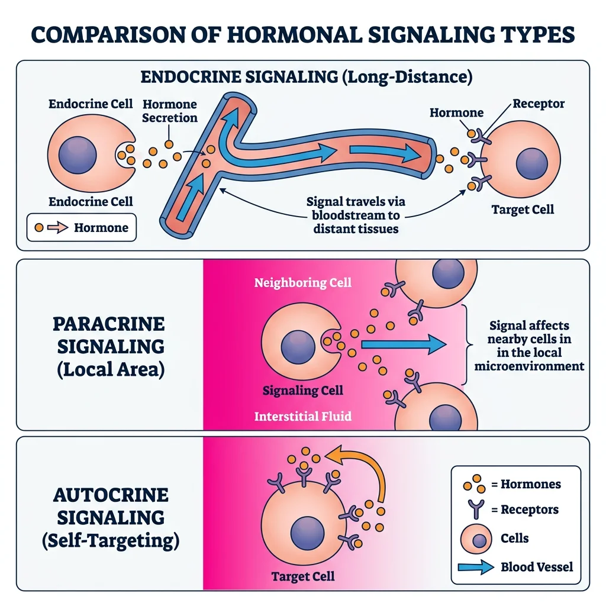
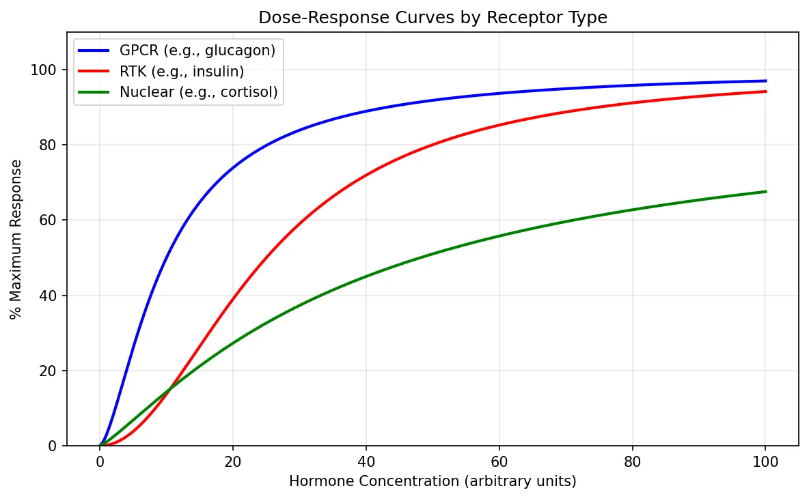
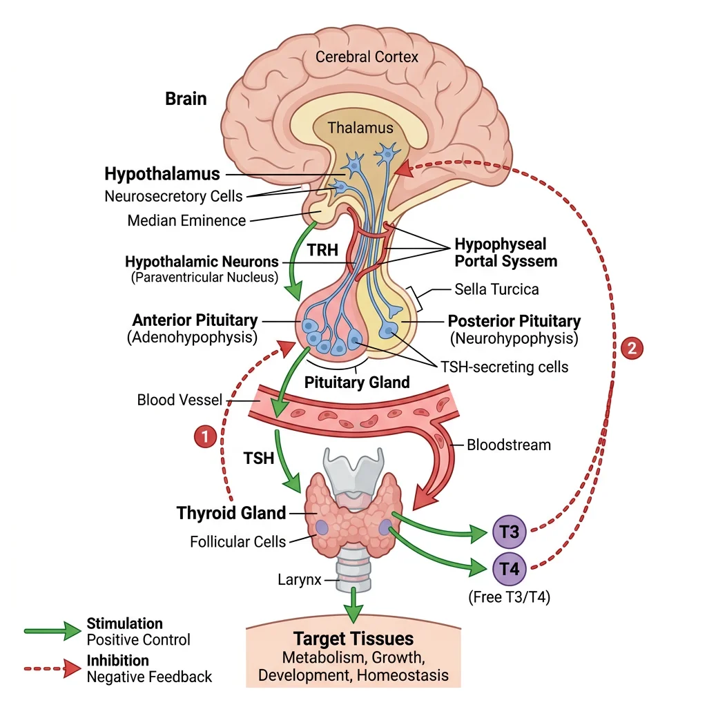
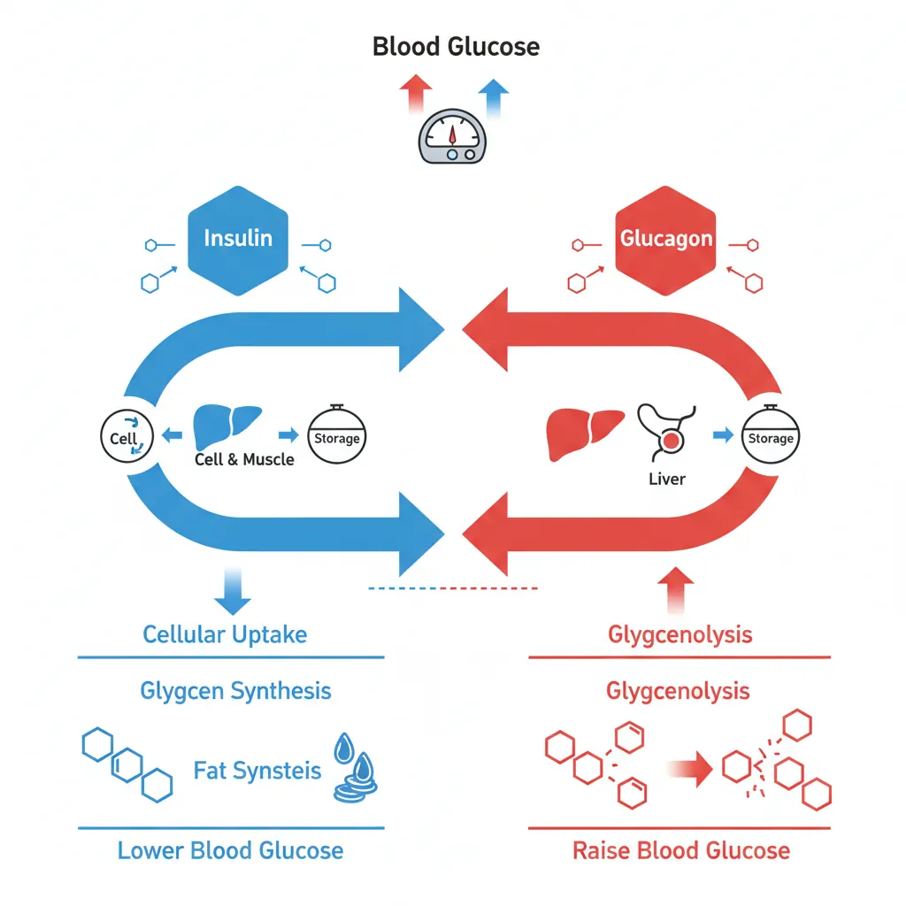
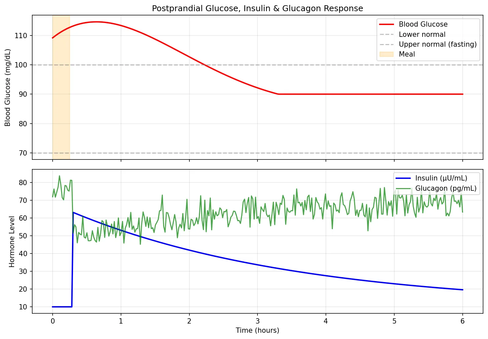
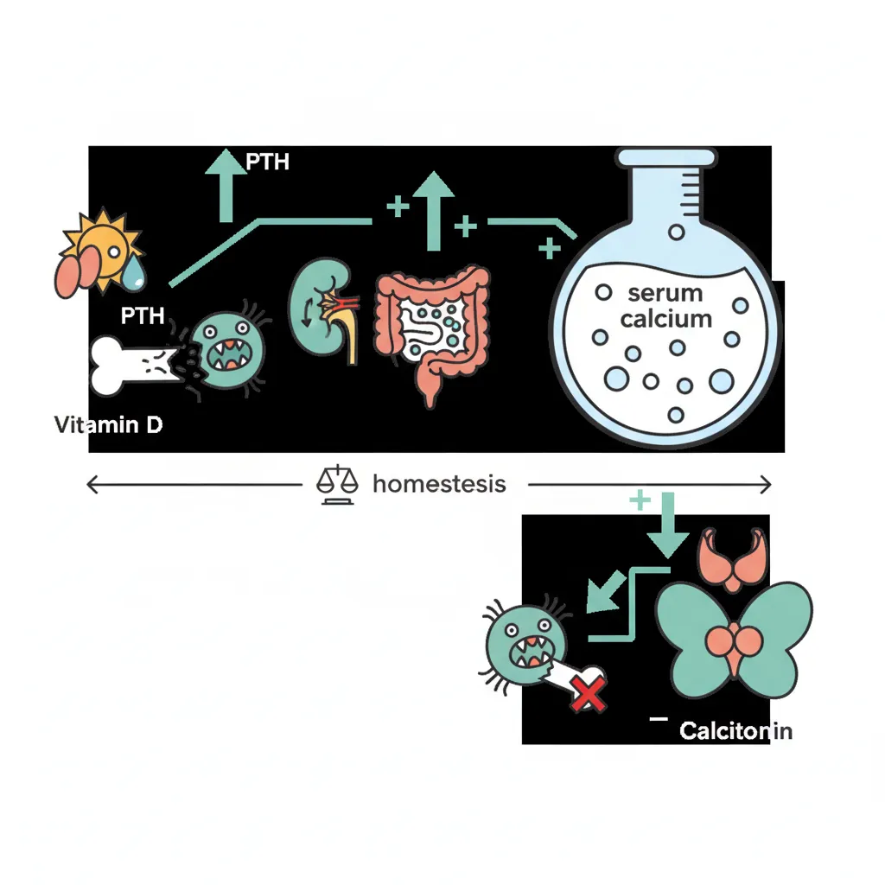
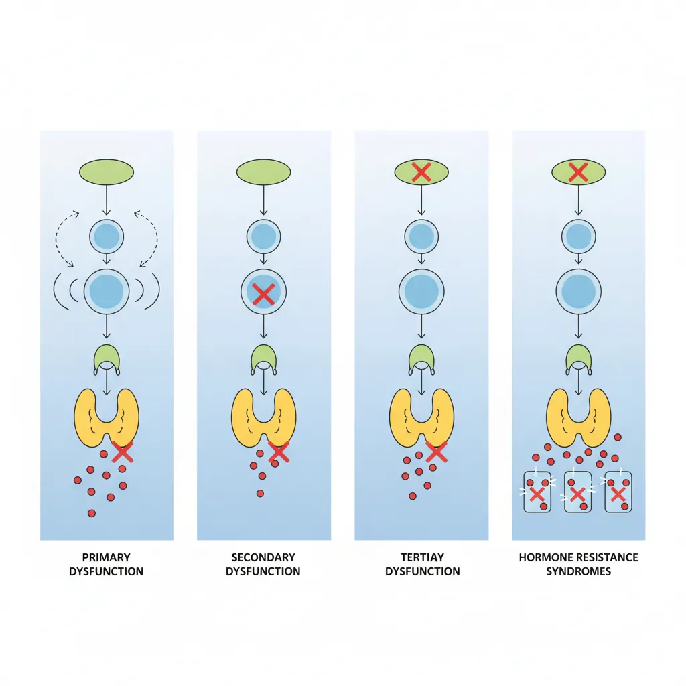
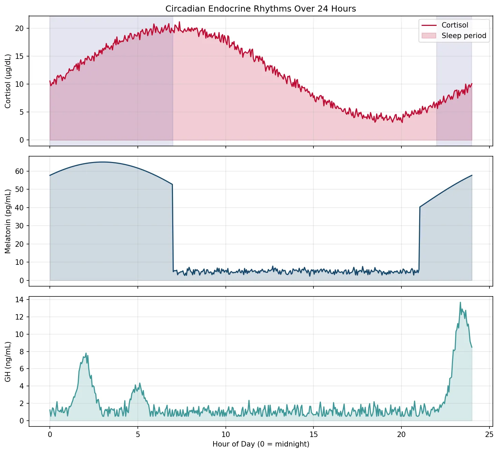

Physiology Mastery
Homeostasis & Feedback
Set points, feedback loops, allostasisNeurophysiology & Action Potentials
Neurons, action potentials, synapsesCardiac Electrophysiology & Hemodynamics
Heart rhythm, hemodynamics, cardiac outputRespiratory Mechanics & Gas Exchange
Breathing mechanics, gas exchange, V/QRenal Physiology & Fluid Balance
Nephron function, filtration, acid-baseGI Physiology & Absorption
Motility, secretion, nutrient absorptionEndocrine Regulation & Metabolism
Hormones, thyroid, adrenal, metabolismExercise Physiology & Adaptation
Acute responses, training adaptationsCellular & Membrane Physiology
Ion transport, signaling, second messengersBlood & Immune Physiology
Hematopoiesis, coagulation, immunityReproductive & Developmental
Reproduction, pregnancy, fetal physiologyIntegrative & Clinical Physiology
Stress, shock, sepsis, agingHormone Basics
The endocrine system is the body's chemical messaging network — a collection of glands and tissues that secrete hormones into the bloodstream to regulate virtually every physiological process: growth, metabolism, reproduction, stress responses, and homeostasis. While the nervous system transmits rapid, point-to-point signals measured in milliseconds, the endocrine system broadcasts slower, widespread signals that persist for minutes to days.

Historical Milestones
The word "hormone" (from Greek hormōn, "to set in motion") was coined by Ernest Starling in 1905, building on his and William Bayliss's 1902 discovery of secretin — the first identified hormone. Earlier, in 1889, Charles-Édouard Brown-Séquard controversially injected himself with testicular extracts, claiming rejuvenation. The isolation of insulin by Banting and Best (1921) revolutionised endocrinology and saved millions of lives. The discovery of hypothalamic releasing factors by Roger Guillemin and Andrew Schally (Nobel Prize, 1977) finally revealed the master switch that controls the entire endocrine orchestra.
Peptide vs Steroid Hormones
Hormones fall into three major chemical classes, and understanding their chemistry is the key to understanding their speed, duration, and mechanism of action.
| Property | Peptide / Protein | Steroid | Amine |
|---|---|---|---|
| Chemistry | Amino acid chains (3 – 200+ residues) | Cholesterol derivatives (4-ring structure) | Modified tyrosine or tryptophan |
| Examples | Insulin, GH, PTH, ADH, oxytocin | Cortisol, aldosterone, oestradiol, testosterone | Thyroid hormones (T3/T4), catecholamines (adrenaline, noradrenaline), melatonin |
| Solubility | Water-soluble | Lipid-soluble | T3/T4: lipid-soluble; catecholamines: water-soluble |
| Transport | Free in plasma | Bound to carrier proteins (CBG, SHBG, albumin) | T3/T4: bound (TBG); catecholamines: free |
| Storage | Secretory vesicles (pre-formed) | Not stored — synthesised on demand | Chromaffin granules (catecholamines); thyroid colloid (T3/T4) |
| Receptor | Cell surface (GPCR, RTK) | Intracellular (nuclear) | T3/T4: nuclear; catecholamines: cell surface |
| Onset | Seconds to minutes | Hours to days | T3/T4: hours; catecholamines: seconds |
| Half-life | Minutes (insulin ~5 min) | Hours (cortisol ~90 min) | T4: ~7 days; adrenaline: ~2 min |
Receptors & Signaling Pathways
The hormone is the message; the receptor is the lock; and the signaling cascade is the chain of events that translates binding into a cellular response. Three major receptor families dominate endocrine signaling.
1. G-Protein Coupled Receptors (GPCRs)
GPCRs are the largest receptor super-family, with 7 transmembrane domains. When a peptide hormone binds, the receptor activates an intracellular G-protein (Gαs, Gαi, or Gαq), which in turn modulates second-messenger systems:
- Gαs → adenylyl cyclase → ↑ cAMP → PKA activation — used by ACTH, TSH, glucagon, PTH, LH, FSH, adrenaline (β-receptors)
- Gαi → ↓ cAMP — used by somatostatin, α₂-adrenergic receptors
- Gαq → PLC → IP₃ + DAG → ↑ Ca²⁺ + PKC — used by GnRH, oxytocin, TRH, adrenaline (α₁-receptors)
2. Receptor Tyrosine Kinases (RTKs)
Insulin, IGF-1, and many growth factors signal through RTKs. Hormone binding causes receptor dimerisation and auto-phosphorylation of tyrosine residues, which recruits adaptor proteins (IRS-1 for insulin) and activates the PI3K/Akt and Ras/MAPK cascades — promoting glucose uptake, protein synthesis, cell growth, and gene transcription.
3. Nuclear / Intracellular Receptors
Steroid hormones and thyroid hormones are lipid-soluble and cross the cell membrane to bind intracellular receptors (often in the cytoplasm or nucleus). The hormone-receptor complex acts as a transcription factor, binding to hormone response elements (HREs) on DNA to activate or repress gene expression. This mechanism is slower (hours) but produces long-lasting effects through protein synthesis changes.
import matplotlib.pyplot as plt
import numpy as np
# Simulate dose-response curves for different receptor types
doses = np.linspace(0, 100, 200)
# Sigmoidal dose-response (Hill equation)
def hill_response(dose, ec50, hill_n, emax=100):
return emax * (dose ** hill_n) / (ec50 ** hill_n + dose ** hill_n)
# Different receptor sensitivities
gpcr_response = hill_response(doses, ec50=10, hill_n=1.5)
rtk_response = hill_response(doses, ec50=25, hill_n=2.0)
nuclear_response = hill_response(doses, ec50=40, hill_n=1.2, emax=90)
fig, ax = plt.subplots(figsize=(8, 5))
ax.plot(doses, gpcr_response, 'b-', linewidth=2, label='GPCR (e.g., glucagon)')
ax.plot(doses, rtk_response, 'r-', linewidth=2, label='RTK (e.g., insulin)')
ax.plot(doses, nuclear_response, 'g-', linewidth=2, label='Nuclear (e.g., cortisol)')
ax.set_xlabel('Hormone Concentration (arbitrary units)')
ax.set_ylabel('% Maximum Response')
ax.set_title('Dose-Response Curves by Receptor Type')
ax.legend()
ax.grid(True, alpha=0.3)
ax.set_ylim(0, 110)
plt.tight_layout()
plt.show()

Feedback Control
Endocrine regulation is overwhelmingly governed by negative feedback — the end product of a hormonal cascade inhibits earlier steps, maintaining levels within a narrow physiological range. This is the endocrine equivalent of a thermostat.
Types of feedback in endocrine systems:
- Long-loop negative feedback: End hormone inhibits the hypothalamus and/or pituitary (e.g., cortisol suppresses CRH and ACTH)
- Short-loop negative feedback: Pituitary hormone inhibits hypothalamic releasing factor (e.g., ACTH suppresses CRH)
- Ultra-short-loop feedback: A hormone inhibits its own release from the same cell (e.g., GnRH inhibits its own secretion)
- Positive feedback: Rare but critical — oestradiol's mid-cycle surge triggers the LH surge that causes ovulation; oxytocin amplifies uterine contractions during labour
The Dexamethasone Suppression Test
A 42-year-old woman presents with weight gain, moon facies, purple striae, and hypertension. Morning cortisol is 28 µg/dL (normal: 5–25). To determine the cause of hypercortisolism, clinicians administer dexamethasone — a synthetic glucocorticoid — overnight:
- Normal response: Dexamethasone suppresses ACTH → cortisol falls below 1.8 µg/dL
- Cushing disease (pituitary adenoma): Partially suppressible — low-dose fails, high-dose (8 mg) suppresses
- Ectopic ACTH (e.g., small cell lung cancer): Not suppressible at any dose
- Adrenal tumour: ACTH already suppressed (autonomous cortisol production); no further suppression
This test elegantly exploits negative feedback physiology to pinpoint the level of the defect in the HPA axis.
Major Endocrine Axes
The hypothalamus integrates neural and hormonal inputs and serves as the master regulator of the endocrine system. Through releasing and inhibiting factors secreted into the hypothalamic-hypophyseal portal system, it controls the anterior pituitary, which in turn drives peripheral endocrine glands. This three-tiered architecture — hypothalamus → pituitary → target gland — creates the major endocrine axes that govern growth, metabolism, reproduction, and stress.

Hypothalamic-Pituitary Axis
Anterior Pituitary (Adenohypophysis)
The anterior pituitary derives from Rathke's pouch (oral ectoderm) and contains five major cell types, each producing specific hormones under hypothalamic control:
| Cell Type | Hormone | Releasing Factor | Inhibitor | Target |
|---|---|---|---|---|
| Somatotrophs (50%) | GH (growth hormone) | GHRH | Somatostatin | Liver (IGF-1), bone, muscle |
| Lactotrophs (15%) | Prolactin | TRH (minor) | Dopamine (primary) | Mammary glands |
| Corticotrophs (15%) | ACTH | CRH | Cortisol (feedback) | Adrenal cortex |
| Thyrotrophs (5%) | TSH | TRH | T3/T4 (feedback) | Thyroid gland |
| Gonadotrophs (10%) | LH, FSH | GnRH (pulsatile) | Inhibin (FSH); sex steroids | Gonads |
Posterior Pituitary (Neurohypophysis)
Unlike the anterior pituitary, the posterior pituitary is a neural extension of the hypothalamus. Cell bodies in the supraoptic and paraventricular nuclei synthesise two peptide hormones that travel down axons for release directly into the bloodstream:
- Antidiuretic Hormone (ADH / Vasopressin): Acts on V2 receptors in the collecting duct → aquaporin-2 insertion → water reabsorption. Also acts on V1 receptors in vascular smooth muscle → vasoconstriction
- Oxytocin: Stimulates uterine contractions during labour and milk let-down during breastfeeding; also implicated in social bonding and trust
Thyroid Physiology
The thyroid gland — a butterfly-shaped organ in the anterior neck weighing 15–20 g — is the body's metabolic thermostat. It produces T4 (thyroxine) and T3 (triiodothyronine), which regulate basal metabolic rate, thermogenesis, growth, and development.
T3/T4 Synthesis — The Iodide Trap
Thyroid hormone synthesis is a multi-step process unique in all of endocrinology because it occurs extracellularly, within the colloid of thyroid follicles:
- Iodide trapping: Sodium-iodide symporter (NIS) on the basolateral membrane concentrates I⁻ 20-40× above plasma levels
- Oxidation: Thyroid peroxidase (TPO) oxidises I⁻ → I₂ at the apical membrane
- Organification: TPO iodinates tyrosine residues on thyroglobulin → MIT (monoiodotyrosine) and DIT (diiodotyrosine)
- Coupling: DIT + DIT → T4; MIT + DIT → T3 (also by TPO)
- Secretion: TSH stimulates endocytosis of colloid → lysosomal cleavage → release of T3 and T4
- Peripheral conversion: Type 1 and 2 deiodinases convert T4 → T3 (active form); Type 3 deiodinase converts T4 → reverse T3 (inactive)
Metabolic Effects of Thyroid Hormones
T3 enters cells and binds nuclear thyroid hormone receptors (TRα and TRβ), modulating transcription of hundreds of genes. Key effects include:
- ↑ Basal metabolic rate — increases Na⁺/K⁺-ATPase expression and mitochondrial uncoupling proteins
- ↑ Thermogenesis — obligatory heat production (calorigenic effect)
- ↑ Heart rate and contractility — upregulates β₁-adrenergic receptors and myosin heavy chain α
- ↑ GI motility — hyperthyroidism causes diarrhoea; hypothyroidism causes constipation
- Essential for CNS development — congenital hypothyroidism (cretinism) causes irreversible intellectual disability if untreated
Hashimoto's vs Graves' Disease
A 35-year-old woman presents with fatigue, weight gain, cold intolerance, and constipation. Labs: TSH = 45 mIU/L (↑↑), free T4 = 0.3 ng/dL (↓↓), anti-TPO antibodies positive. Diagnosis: Hashimoto's thyroiditis — autoimmune destruction of the thyroid. Treatment: levothyroxine (synthetic T4) replacement.
Contrast with a 28-year-old woman with weight loss, tremor, heat intolerance, tachycardia, and exophthalmos. Labs: TSH = 0.01 mIU/L (↓↓), free T4 = 4.5 ng/dL (↑↑), TSI antibodies positive. Diagnosis: Graves' disease — TSH receptor-stimulating antibodies. Treatment options: methimazole (blocks TPO), radioactive iodine ablation, or surgery.
Key distinction: Both are autoimmune, but Hashimoto's destroys the gland (hypothyroid) while Graves' stimulates it (hyperthyroid). The TSH level instantly tells you which direction the axis has shifted.
Adrenal Hormones
Each adrenal gland sits atop a kidney and consists of two functionally distinct regions: the cortex (mesodermal origin) and the medulla (neural crest origin). The classic mnemonic for cortical zones is "GFR" — from outer to inner: Glomerulosa, Fasciculata, Reticularis, making Salt, Sugar, Sex (mineralocorticoids, glucocorticoids, androgens).
| Zone | Hormone | Regulation | Key Actions |
|---|---|---|---|
| Zona Glomerulosa | Aldosterone | Angiotensin II, K⁺, ACTH (minor) | Na⁺ reabsorption, K⁺ secretion, BP regulation |
| Zona Fasciculata | Cortisol | ACTH (primary), CRH | Gluconeogenesis, anti-inflammatory, immunosuppressive, stress response |
| Zona Reticularis | DHEA, androstenedione | ACTH | Weak androgens → converted to testosterone/oestrogen peripherally |
| Medulla | Adrenaline (80%), noradrenaline (20%) | Sympathetic preganglionic (ACh) | Fight-or-flight: ↑ HR, ↑ BP, bronchodilation, glycogenolysis |
Cortisol — The Stress Hormone
Cortisol is essential for life. Its actions span nearly every organ system:
- Metabolic: ↑ gluconeogenesis, ↑ lipolysis, ↑ proteolysis → raises blood glucose
- Immune: Suppresses NF-κB, ↓ inflammatory cytokines, ↓ lymphocyte proliferation
- Cardiovascular: Permissive effect on catecholamines — enhances vascular responsiveness
- Bone: Inhibits osteoblasts → chronic excess causes osteoporosis
- CNS: Modulates mood, cognition, and memory consolidation
Growth Hormone Regulation
Growth Hormone (GH), a 191-amino acid peptide from somatotrophs, is secreted in a distinctive pulsatile pattern — with the largest pulse occurring during slow-wave (deep) sleep. Its release is controlled by the balance of two hypothalamic hormones:
- GHRH (Growth Hormone-Releasing Hormone): Stimulates GH release via Gαs → cAMP
- Somatostatin (GHIH): Inhibits GH release via Gαi → ↓ cAMP
GH acts both directly (diabetogenic effects: lipolysis, insulin resistance) and indirectly through IGF-1 (insulin-like growth factor 1) produced by the liver. IGF-1 mediates most growth-promoting effects (linear bone growth, muscle hypertrophy, organ growth).
Acromegaly — Too Much GH in Adults
A 48-year-old man notices his ring size has increased over 5 years, his shoes no longer fit, and his jaw has become more prominent. His wife notes coarsened facial features and snoring. Labs: serum IGF-1 = 780 ng/mL (↑↑), GH fails to suppress below 1 ng/mL after 75 g oral glucose load (OGTT). MRI reveals a 1.5 cm pituitary macroadenoma.
Pathophysiology: In adults (fused growth plates), GH excess causes acral growth (hands, feet, jaw) and visceral enlargement (heart, liver), not increased height. Complications include cardiomyopathy, obstructive sleep apnoea, diabetes mellitus, and colon polyps.
Treatment: Transsphenoidal surgery (first-line), somatostatin analogues (octreotide), GH receptor antagonist (pegvisomant).
Metabolic Physiology
Metabolism is the sum of all chemical reactions in the body — the continuous interconversion of fuels (carbohydrates, lipids, proteins) to meet energy demands. The endocrine system orchestrates these metabolic pathways, with insulin and glucagon serving as the primary conductors of this metabolic symphony.

Glucose Homeostasis (Insulin/Glucagon)
Blood glucose is maintained within a remarkably narrow range (70–100 mg/dL fasting) despite widely varying food intake and energy expenditure. This is achieved primarily by the islets of Langerhans in the pancreas — approximately 1 million islets comprising just 1-2% of pancreatic mass.
Insulin — The Anabolic Master
Secreted by β-cells (65% of islet mass), insulin is released in response to elevated blood glucose. Glucose enters β-cells via GLUT2 → metabolised → ↑ ATP/ADP ratio → closes K_ATP channels → depolarisation → Ca²⁺ influx → exocytosis of insulin granules.
| Tissue | GLUT Transporter | Insulin-Dependent? | Clinical Significance |
|---|---|---|---|
| Skeletal Muscle | GLUT4 | Yes (insulin translocates GLUT4 to membrane) | Major site of postprandial glucose disposal (~80%) |
| Adipose Tissue | GLUT4 | Yes | Glucose → glycerol-3-phosphate for triglyceride synthesis |
| Liver | GLUT2 | No (always permeable), but insulin ↑ glucokinase | Acts as glucose buffer — uptake or release as needed |
| Brain | GLUT1, GLUT3 | No (insulin-independent) | Obligate glucose consumer (~120 g/day); protected from hypoglycaemia |
| Red Blood Cells | GLUT1 | No | Obligate anaerobic glycolysis (no mitochondria) |
| β-cells (Pancreas) | GLUT2 | No (acts as glucose sensor) | High Km matches glucose sensor role |
Glucagon — The Counter-Regulatory Champion
Secreted by α-cells (25% of islet mass), glucagon opposes insulin and raises blood glucose through:
- Glycogenolysis: Activates glycogen phosphorylase in the liver (not muscle — which lacks glucagon receptors)
- Gluconeogenesis: Stimulates hepatic production of glucose from lactate, glycerol, and amino acids
- Ketogenesis: During prolonged fasting, promotes fatty acid oxidation → ketone bodies (brain fuel)
import numpy as np
import matplotlib.pyplot as plt
# Simulate blood glucose regulation after a meal
time_hours = np.linspace(0, 6, 300)
# Meal at t=0 causes glucose spike
glucose_spike = 40 * np.exp(-0.5 * time_hours) * np.sin(0.8 * time_hours + 0.5)
glucose_spike[glucose_spike < 0] = 0
blood_glucose = 90 + glucose_spike # mg/dL
# Insulin response (delayed, proportional to glucose)
insulin = 10 + 50 * np.exp(-0.3 * (time_hours - 0.5)) * np.heaviside(time_hours - 0.3, 0.5)
insulin = np.clip(insulin, 10, 70)
# Glucagon (inverse relationship)
glucagon = 80 - 0.5 * insulin + 5 * np.random.randn(len(time_hours))
glucagon = np.clip(glucagon, 30, 85)
fig, (ax1, ax2) = plt.subplots(2, 1, figsize=(10, 7), sharex=True)
ax1.plot(time_hours, blood_glucose, 'r-', linewidth=2, label='Blood Glucose')
ax1.axhline(y=70, color='gray', linestyle='--', alpha=0.5, label='Lower normal')
ax1.axhline(y=100, color='gray', linestyle='--', alpha=0.5, label='Upper normal (fasting)')
ax1.axvspan(0, 0.25, alpha=0.2, color='orange', label='Meal')
ax1.set_ylabel('Blood Glucose (mg/dL)')
ax1.set_title('Postprandial Glucose, Insulin & Glucagon Response')
ax1.legend(loc='upper right')
ax1.grid(True, alpha=0.3)
ax2.plot(time_hours, insulin, 'b-', linewidth=2, label='Insulin (µU/mL)')
ax2.plot(time_hours, glucagon, 'g-', linewidth=1.5, alpha=0.7, label='Glucagon (pg/mL)')
ax2.set_xlabel('Time (hours)')
ax2.set_ylabel('Hormone Level')
ax2.legend(loc='upper right')
ax2.grid(True, alpha=0.3)
plt.tight_layout()
plt.show()

Type 1 vs Type 2 Diabetes
Type 1 DM (5-10%): Autoimmune destruction of β-cells by T-lymphocytes → absolute insulin deficiency. Typically presents in childhood/adolescence with polyuria, polydipsia, weight loss, and diabetic ketoacidosis (DKA). Treatment: lifelong insulin replacement.
Type 2 DM (90-95%): Progressive insulin resistance in peripheral tissues (muscle, adipose, liver) → compensatory hyperinsulinaemia → eventual β-cell exhaustion → relative insulin deficiency. Risk factors: obesity, sedentary lifestyle, family history, age. Initially managed with lifestyle changes and metformin (↓ hepatic glucose production via AMPK activation).
Metabolic distinction: Type 1 patients are prone to DKA (no insulin → unrestricted lipolysis → ketogenesis). Type 2 patients rarely develop DKA because even minimal insulin levels suppress ketogenesis; instead, they may develop hyperosmolar hyperglycaemic state (HHS) with extreme hyperglycaemia (>600 mg/dL) and dehydration.
Lipid Metabolism
Lipids are the body's most energy-dense fuel, providing 9 kcal/g compared to 4 kcal/g for carbohydrates or proteins. During fasting and prolonged exercise, fatty acid oxidation becomes the dominant energy source for most tissues.
β-Oxidation
Long-chain fatty acids enter the mitochondria via the carnitine shuttle (CPT-I on the outer membrane, carnitine-acylcarnitine translocase, CPT-II on the inner membrane). Inside mitochondria, the fatty acid undergoes four repeating steps (oxidation, hydration, oxidation, thiolysis) that remove 2-carbon units as acetyl-CoA, which enters the TCA cycle. Each cycle also produces FADH₂ and NADH for the electron transport chain.
A single molecule of palmitate (16-carbon) yields ~106 ATP — compared to ~30-32 ATP from one glucose molecule. This immense energy density is why fat stores can sustain life for weeks during starvation.
Ketogenesis
When hepatic acetyl-CoA production from β-oxidation exceeds TCA cycle capacity (as in fasting, DKA, or a ketogenic diet), excess acetyl-CoA is diverted to ketone body synthesis in liver mitochondria:
- Acetoacetate (the first ketone body formed)
- β-Hydroxybutyrate (the predominant circulating ketone body — reduced from acetoacetate by NADH)
- Acetone (spontaneous decarboxylation of acetoacetate — volatile, exhaled → fruity breath odour in DKA)
Ketone bodies cross the blood-brain barrier and can supply up to 75% of the brain's energy needs during prolonged fasting — a critical survival adaptation that spares muscle protein from gluconeogenic breakdown.
Protein Metabolism
Amino acids serve structural (protein synthesis), regulatory (enzyme, hormone production), and energetic roles. When amino acids are used for energy, the first step is transamination (transfer of the amino group to α-ketoglutarate → glutamate) or oxidative deamination (glutamate → α-ketoglutarate + NH₄⁺). The released ammonia is toxic and must be converted to urea in the liver via the urea cycle (Krebs-Henseleit cycle).
Amino acids are classified as glucogenic (carbon skeletons enter gluconeogenesis — e.g., alanine → pyruvate), ketogenic (enter ketogenesis — leucine, lysine), or both (e.g., isoleucine, phenylalanine, tryptophan). The glucose-alanine cycle shuttles amino groups from muscle to liver: muscle transaminates pyruvate → alanine → blood → liver → pyruvate (for gluconeogenesis) + NH₄⁺ (for urea cycle).
Fed vs Fasting State
The body's metabolic profile undergoes a dramatic shift between the fed (absorptive) and fasted (post-absorptive) states, orchestrated primarily by the insulin-to-glucagon ratio.
| Feature | Fed State (High Insulin) | Fasting State (High Glucagon) | Prolonged Starvation |
|---|---|---|---|
| Primary fuel | Glucose (dietary) | Fatty acids + hepatic glucose | Ketone bodies + fatty acids |
| Liver | Glycogenesis, lipogenesis, protein synthesis | Glycogenolysis, gluconeogenesis, β-oxidation | Gluconeogenesis (↓), ketogenesis (↑↑) |
| Muscle | ↑ Glucose uptake (GLUT4), glycogen synthesis, protein synthesis | Fatty acid oxidation, branched-chain AA catabolism | Ketone body oxidation, ↓ proteolysis (adaptation) |
| Adipose | Lipogenesis, ↓ lipolysis (insulin suppresses HSL) | Lipolysis (↑ HSL), release of FFA + glycerol | Continued lipolysis (diminishing stores) |
| Brain | Glucose exclusively | Glucose (obligate) | Ketone bodies (up to 75%) + glucose |
| Time frame | 0–4 hours after meal | 4–24 hours | > 2-3 days |
Calcium & Bone Physiology
Calcium is the most abundant mineral in the human body (~1 kg in a 70 kg adult), with 99% residing in bone as hydroxyapatite crystals. The remaining 1% in blood and tissues is critical for neuromuscular excitability, cardiac contraction, blood clotting, enzyme activation, and intracellular signaling. Serum calcium is tightly regulated between 8.5–10.5 mg/dL (2.1–2.6 mmol/L).

PTH, Vitamin D & Calcitonin
Three hormones (and a fourth — FGF-23 — increasingly recognised) collaborate to maintain calcium and phosphate homeostasis.
Parathyroid Hormone (PTH)
Secreted by the parathyroid glands (4 small glands behind the thyroid) in response to low ionised calcium detected by the calcium-sensing receptor (CaSR) on parathyroid cells. PTH raises calcium through three mechanisms:
- Bone: Stimulates osteoclastic bone resorption → releases Ca²⁺ and PO₄³⁻ into blood
- Kidney: ↑ Ca²⁺ reabsorption in DCT; ↓ PO₄³⁻ reabsorption in PCT (phosphaturic); ↑ 1α-hydroxylase → converts 25-OH-vitamin D → active 1,25-(OH)₂-vitamin D (calcitriol)
- Gut (indirect): Via vitamin D activation → ↑ intestinal Ca²⁺ and PO₄³⁻ absorption
Vitamin D
Vitamin D is technically a prohormone, not a vitamin. Its synthesis pathway crosses three organs:
- Skin: UV-B converts 7-dehydrocholesterol → cholecalciferol (vitamin D₃)
- Liver: 25-hydroxylase → 25-OH-vitamin D (calcidiol) — the form measured in blood tests
- Kidney: 1α-hydroxylase → 1,25-(OH)₂-vitamin D (calcitriol) — the active hormonal form
Calcitriol binds the nuclear vitamin D receptor (VDR) and increases intestinal absorption of calcium (via calbindin-D9k and TRPV6 channels) and phosphate. Deficiency causes rickets in children (soft, bowed bones) and osteomalacia in adults (diffuse bone pain, proximal muscle weakness).
Calcitonin & FGF-23
Calcitonin (from thyroid parafollicular C-cells) is released in response to high calcium and opposes PTH by inhibiting osteoclast activity. However, its physiological importance in adult humans is relatively minor — total thyroidectomy patients (who lose calcitonin entirely) maintain normal calcium. Calcitonin's main clinical role is as a tumour marker for medullary thyroid carcinoma.
FGF-23 (from osteocytes) is the "phosphatonin" — it promotes renal phosphate excretion and inhibits 1α-hydroxylase. FGF-23 excess (tumour-induced osteomalacia) causes phosphate wasting and bone softening.
Post-Thyroidectomy Hypocalcaemia
A 52-year-old woman undergoes total thyroidectomy for papillary thyroid cancer. Twelve hours post-operatively, she develops perioral tingling, carpopedal spasm, and a positive Chvostek's sign (facial nerve tap → twitch) and Trousseau's sign (BP cuff inflation → carpal spasm). Serum calcium = 6.8 mg/dL (↓↓), PTH = 4 pg/mL (↓↓).
Diagnosis: Surgical hypoparathyroidism from inadvertent removal or devascularisation of parathyroid glands. The symptoms reflect increased neuromuscular excitability from low ionised calcium, which shifts the threshold potential closer to resting potential.
Treatment: Acute: IV calcium gluconate (10 mL of 10% slowly). Chronic: oral calcium + calcitriol (active vitamin D — since PTH is needed to activate 25-OH-vitamin D, giving calcidiol alone won't work).
Bone Remodeling
Bone is not static — it is a living tissue undergoing continuous remodeling, with approximately 10% of the adult skeleton replaced annually. This process involves a tightly coupled cycle of resorption and formation carried out by the basic multicellular unit (BMU).
The RANK/RANKL/OPG System
The balance between bone formation and resorption is controlled by a molecular triad:
- RANKL (receptor activator of NF-κB ligand): Produced by osteoblasts and osteocytes; binds RANK on osteoclast precursors → promotes differentiation, activation, and survival of osteoclasts → bone resorption
- OPG (osteoprotegerin): A "decoy receptor" also produced by osteoblasts; binds RANKL and prevents it from activating osteoclasts → protects bone
- RANK: Receptor on osteoclast precursors; when bound by RANKL → triggers osteoclast maturation
The RANKL/OPG ratio determines net bone balance. PTH and cortisol increase RANKL (promoting resorption); oestrogen decreases RANKL and increases OPG (protecting bone — which is why postmenopausal oestrogen loss accelerates osteoporosis). The drug denosumab is a monoclonal antibody against RANKL — a therapeutic application of this pathway.
Advanced Topics

Hormone Resistance
In hormone resistance syndromes, hormone levels are elevated but the target tissue fails to respond appropriately — a downstream defect that mimics deficiency despite excess. This concept is crucial for interpreting endocrine lab results.
| Syndrome | Mechanism | Hormone Level | Clinical Features |
|---|---|---|---|
| Type 2 Diabetes | Insulin receptor downregulation + post-receptor signaling defects (IRS-1, PI3K pathway) | ↑ Insulin (early), then ↓ (β-cell exhaustion) | Hyperglycaemia, acanthosis nigricans, metabolic syndrome |
| Pseudohypoparathyroidism (PHP) Type 1a | Inactivating mutation of Gsα (GNAS gene) → PTH receptor unresponsive | ↑↑ PTH | Hypocalcaemia, hyperphosphataemia + Albright hereditary osteodystrophy (short stature, round face, short 4th metacarpal) |
| Androgen Insensitivity (CAIS) | Non-functional androgen receptor (AR gene, X-linked) | ↑ Testosterone, ↑ LH | 46,XY phenotypically female; bilateral testes, absent uterus |
| Nephrogenic Diabetes Insipidus | Defective V2 receptor or AQP2 channels in collecting duct | ↑ ADH | Polyuria, polydipsia; ADH (desmopressin) is ineffective |
| Laron Syndrome | GH receptor mutation → no IGF-1 production | ↑ GH, ↓↓ IGF-1 | Severe short stature; resistant to exogenous GH (treat with recombinant IGF-1) |
Circadian Endocrine Rhythms
Many hormones follow circadian (24-hour) or ultradian (shorter) rhythms driven by the suprachiasmatic nucleus (SCN) of the hypothalamus — the body's master clock. Understanding these rhythms is essential for proper timing of blood tests and medication administration.
- Cortisol: Peaks at 6-8 AM ("dawn cortisol"), lowest at midnight. Morning cortisol <18 µg/dL may indicate adrenal insufficiency; late-night salivary cortisol >0.2 µg/dL suggests Cushing syndrome. Cortisol must be measured at the correct time to be interpretable.
- Growth Hormone: ~70% of daily secretion occurs during slow-wave sleep (typically first 2 hours after sleep onset). Sleep deprivation → ↓ GH → impaired tissue repair and growth in children.
- Melatonin: Secreted by the pineal gland; rises in darkness, suppressed by light. Sets the body's sleep-wake cycle; exogenous melatonin is used for jet lag and circadian rhythm disorders.
- TSH: Nocturnal surge with peak around 2-4 AM; troughs in the late afternoon.
- Testosterone: Peaks in early morning (~8 AM); declines through the day. Levels should be measured before 10 AM for accurate assessment.
import numpy as np
import matplotlib.pyplot as plt
# Simulate 24-hour circadian hormone profiles
hours = np.linspace(0, 24, 480)
# Cortisol: peak ~6-8 AM, nadir ~midnight
cortisol = 12 + 8 * np.cos(2 * np.pi * (hours - 7) / 24) + np.random.randn(len(hours)) * 0.5
cortisol = np.clip(cortisol, 2, 25)
# Melatonin: peak ~2-4 AM, suppressed during day
melatonin = np.where(
(hours < 7) | (hours > 21),
40 + 25 * np.cos(2 * np.pi * (hours - 3) / 24),
5 + np.random.randn(len(hours)) * 1
)
melatonin = np.clip(melatonin, 2, 70)
# GH: pulsatile, biggest pulse during early sleep (11 PM - 1 AM)
gh_base = 1 + 0.5 * np.random.randn(len(hours))
gh_pulses = 12 * np.exp(-0.5 * ((hours - 23.5) / 0.5) ** 2) + \
6 * np.exp(-0.5 * ((hours - 2) / 0.4) ** 2) + \
3 * np.exp(-0.5 * ((hours - 5) / 0.3) ** 2)
growth_hormone = gh_base + gh_pulses
growth_hormone = np.clip(growth_hormone, 0.5, 20)
fig, axes = plt.subplots(3, 1, figsize=(10, 9), sharex=True)
axes[0].plot(hours, cortisol, color='#BF092F', linewidth=1.5)
axes[0].fill_between(hours, cortisol, alpha=0.2, color='#BF092F')
axes[0].set_ylabel('Cortisol (µg/dL)')
axes[0].set_title('Circadian Endocrine Rhythms Over 24 Hours')
axes[0].axvspan(22, 24, alpha=0.1, color='navy', label='Sleep')
axes[0].axvspan(0, 7, alpha=0.1, color='navy')
axes[0].legend(['Cortisol', 'Sleep period'])
axes[0].grid(True, alpha=0.3)
axes[1].plot(hours, melatonin, color='#16476A', linewidth=1.5)
axes[1].fill_between(hours, melatonin, alpha=0.2, color='#16476A')
axes[1].set_ylabel('Melatonin (pg/mL)')
axes[1].grid(True, alpha=0.3)
axes[2].plot(hours, growth_hormone, color='#3B9797', linewidth=1.5)
axes[2].fill_between(hours, growth_hormone, alpha=0.2, color='#3B9797')
axes[2].set_ylabel('GH (ng/mL)')
axes[2].set_xlabel('Hour of Day (0 = midnight)')
axes[2].grid(True, alpha=0.3)
plt.tight_layout()
plt.show()

Stress Physiology (HPA Axis)
The hypothalamic-pituitary-adrenal (HPA) axis is the body's central stress response system. When the brain perceives a threat — physical (infection, haemorrhage, surgery) or psychological (fear, anxiety) — the cascade unfolds:
- Hypothalamus: Releases CRH (and ADH as a co-secretagogue) from the paraventricular nucleus into portal blood
- Anterior Pituitary: Corticotrophs respond to CRH by cleaving POMC (pro-opiomelanocortin) → ACTH + β-endorphin + MSH
- Adrenal Cortex: ACTH stimulates cortisol synthesis (and to a lesser extent, aldosterone and adrenal androgens)
- Cortisol: Mobilises metabolic fuels, suppresses non-essential functions (reproduction, growth, digestion, immune activity), and feeds back to suppress CRH and ACTH
Cushing Syndrome vs Addison Disease — Excess vs Deficiency
Cushing Syndrome (cortisol excess): Central obesity, moon facies, buffalo hump, purple striae (skin thinning from collagen breakdown), proximal myopathy, hyperglycaemia, hypertension, osteoporosis, immunosuppression. ACTH may be high (pituitary adenoma, ectopic ACTH) or low (adrenal tumour, exogenous steroids).
Addison Disease (primary adrenal insufficiency): Fatigue, weight loss, hypotension, hyperpigmentation (↑ ACTH → ↑ MSH from POMC cleavage → melanocyte stimulation), hyperkalaemia, hyponatraemia, salt craving. Most common cause in developed countries: autoimmune (anti-21-hydroxylase antibodies).
The pigmentation clue: Hyperpigmentation in Addison disease (especially in skin creases, gums, and areas exposed to friction) distinguishes primary adrenal insufficiency (high ACTH) from secondary (pituitary failure → low ACTH → no hyperpigmentation).
Interactive Tool
Use this Endocrine Axis Profiler to document a hypothalamic-pituitary-target gland axis. Enter the components of your chosen axis, including the releasing and tropic hormones, receptor types, feedback loops, and associated disorders. Generate a professional document in Word, Excel, or PDF format.
Endocrine Axis Profiler
Map the complete signaling cascade for any endocrine axis — from hypothalamic releasing factors to target gland hormones and feedback loops. Download as Word, Excel, or PDF.
Practice Exercises
Conclusion & Next Steps
The endocrine system exemplifies the elegance of biological regulation — a network of chemical messengers that coordinates metabolism, growth, reproduction, and responses to stress across every organ system. From the three-tiered architecture of hypothalamic-pituitary-target gland axes to the minute-by-minute interplay of insulin and glucagon in glucose homeostasis, these integrated control systems maintain the internal milieu that Claude Bernard first envisioned in the 19th century.
Key concepts to carry forward include: (1) the distinction between water-soluble and lipid-soluble hormones determines their speed of action, transport, and receptor location; (2) negative feedback is the dominant regulatory motif, and understanding it is the key to interpreting endocrine lab results; (3) the fed-fasting metabolic transition illustrates how insulin and glucagon orchestrate whole-body fuel partitioning; (4) calcium homeostasis integrates signals from parathyroids, kidneys, bone, and gut via PTH and vitamin D; and (5) hormone resistance syndromes teach us that hormone level alone does not equal hormone action.
In Part 8, we shift from the chemical regulators to the physiological responses to physical activity — exploring how the cardiovascular, respiratory, muscular, and endocrine systems adapt acutely and chronically to exercise, and how these adaptations can be precisely quantified and prescribed.